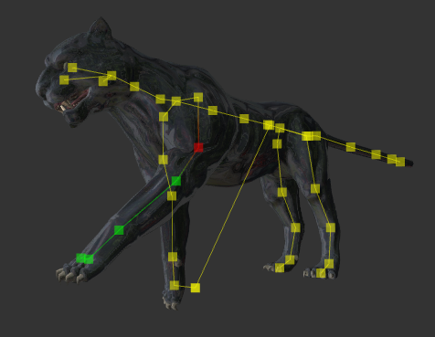
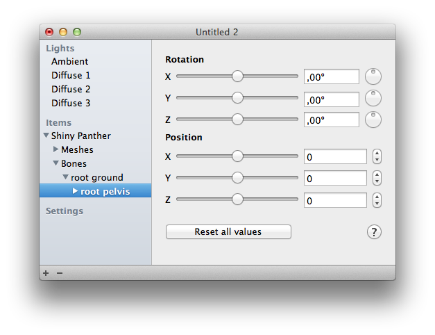

They form a connected skeleton. This is shown by default if you select a model or one or more bones. The selected bones are in red. Childs of the bone are yellow, while all other bones in the model are yellow. You can disable this display in the “View” menu. When rendering to image files, this view is always disabled.
You can download poses on the internet and apply them to your models. To do this select the model in the document window and click the “Load pose”-button. If you want, you can edit the pose further.

You can create your own poses by selecting the bones. You find them under each model, under the item Bones. Then you can select position and rotation directly or via the sliders. It is usually sufficient to adjust only rotations. You can edit several bones at once, which can reduce effort e.g. with hands.
You can select bones in the render window by clicking. The selection in render window and document window are always the same. You can also adjust the positions directly in the render window:
| Input | Change |
|---|---|
| Click and drag with X, Y and/or Z key pressed | Rotates the bone around the selected axis(es). |
| Arrow keys with X, Y and/or Z key pressed | Moves the bone in the selected direction(s). Movement is faster if you press the shift key, too. |